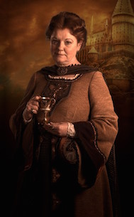
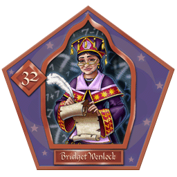
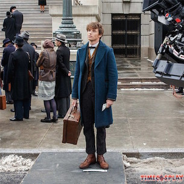
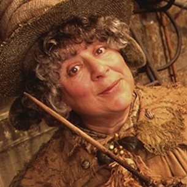
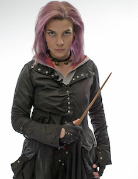
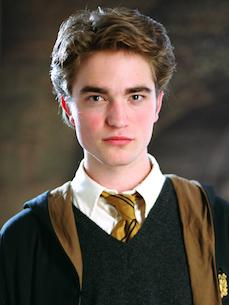
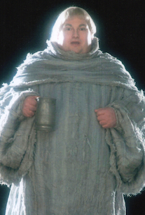

"Hufflepuffs value hard work, patience, loyalty, and fair play. The house has produced its share of great wizards – not least Newt Scamander, author of Fantastic Beasts and Where to Find Them"-JK Rowling.
History of Hufflepuff
Hufflepuff is one of the four Houses of Hogwarts School of Witchcraft and Wizardry
Its founder was the medieval witch Helga Hufflepuff.
Hufflepuff is the most inclusive among the four houses; valuing hard work, dedication, patience, loyalty, and fair play rather than a particular aptitude in its members
The emblematic animal is a badger,and yellow and black are its colours.
The Head of Hufflepuff is Pomona Sprout and the Fat Friar is the House's patron ghost.
Hufflepuff corresponds roughly to the element of earth, and it is for that reason that the House colours were chosen: yellow represented wheat, while black was emblematic of soil.
Students sorted into Hufflepuff often demonstrate exceptional abilities in Herbology, owing to their correspondence to earth
Famous Wizards from Hufflepuff

Helga Hufflepuff
One of the Four Founders of Hogwarts School For Witchcraft and Wizardry

Bridget Wenlock
Former Student at Hogwarts, and a famous thirteenth-century witch celebrated for her skills in Arithmancy.

Newt Scamander
Former student at Hogwarts, and the author of "Fantasic Beasts and Where to Find Them"

Pomona Sprout
Head of Hufflepuff House, and the Herbology Proffessor

Nymphodora Tonks
Former student at Hogwarts, and wife to Remus Lupin

Cedric Diggory
Former student at Hogwarts, and a Twiwizard Champion/p>

The Fat Friar
Hufflepuff House Ghost, and quite a jolly old ghost, particularly if you compare him to Moaning Myrtle